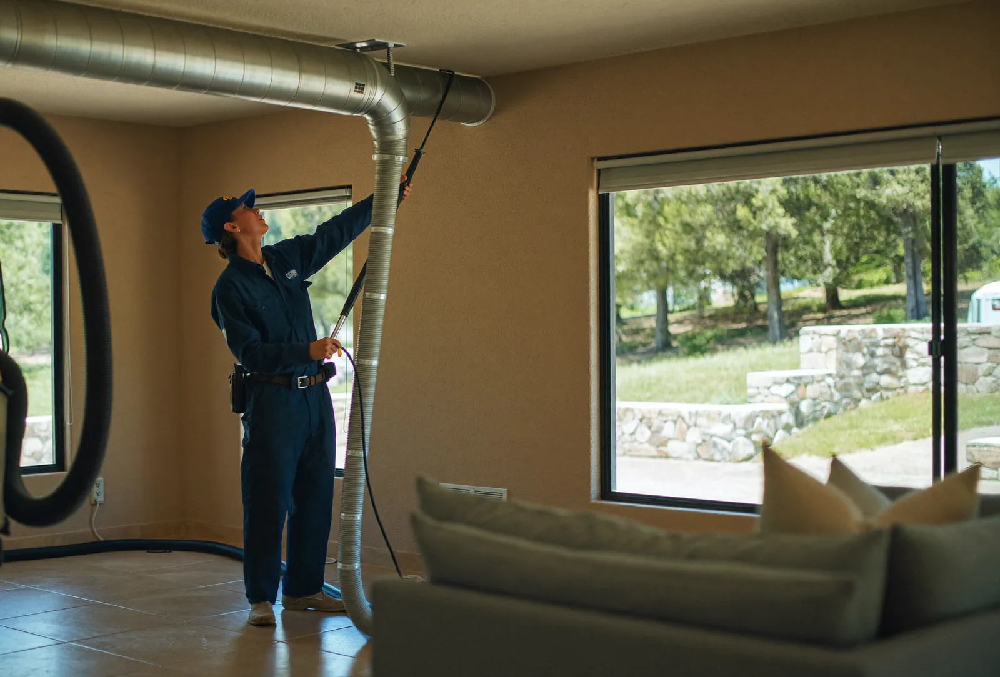
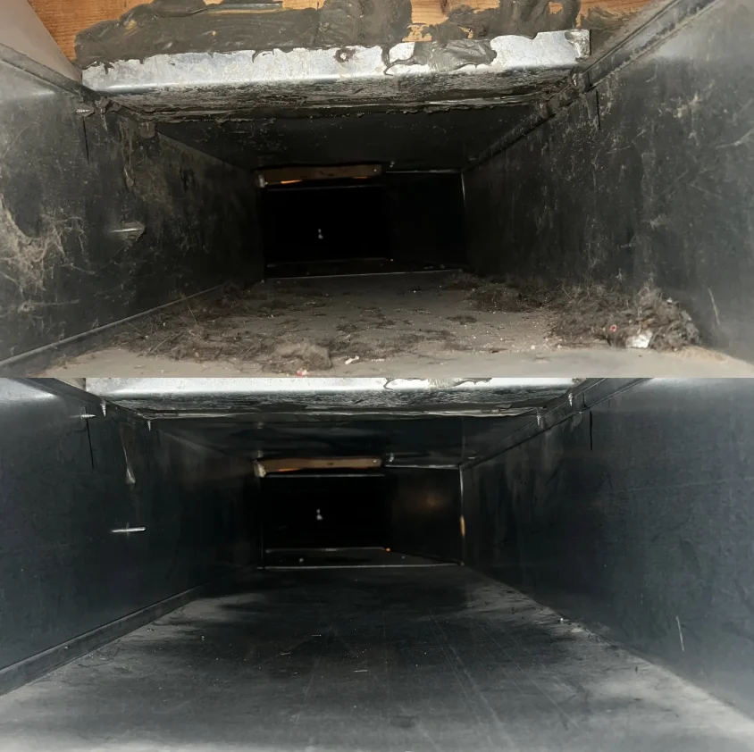

Every supply run, every return, the plenum and the blower wheel — cleaned under negative pressure so the debris leaves your house instead of moving around it.

Air duct cleaning in San Antonio means pulling years of settled dust, pollen and attic debris out of the ductwork that feeds every room of your home. We work on houses across Bexar County — 1970s ranches on the South Side, Stone Oak two-stories with dual systems, and everything between — and the outcome is the same: a system that stops handing the same dust back to you every cycle.
The method that matters is called source removal. The ductwork is put under negative pressure with a high-volume vacuum, every register is sealed, and then each run is agitated with rotating brushes or compressed-air whips. Because the system is already pulling one direction, everything that comes loose travels into the vacuum and not into your living room.
A complete job also covers the equipment: the return plenum, the blower wheel, and the evaporator coil. Skipping those is the shortcut that makes a cheap quote possible, and it is also why some homes smell exactly the same the day after a cleaning.
We finish with a walkthrough at the same access points we opened at the start, so you are comparing the same runs rather than taking our word for it.
If none of those describe your house and the system is newer, you can usually wait. We will say so on the walkthrough.
Three local conditions stack on top of ordinary household dust. First, the Edwards Plateau limestone under this city produces a fine pale dust that works into everything during dry stretches, and the construction boom along the 1604 corridor keeps adding to it. Second, humidity here sits high for most of the year, which makes that dust clump and stick to duct walls instead of staying loose enough to reach a filter.
Third, and biggest: almost all residential ductwork in San Antonio is insulated flex duct suspended in an attic. Attic heat degrades the outer jacket, foot traffic during roof and insulation work crushes runs against trusses, and rodents open the inner liner. Once a return run is torn, the system pulls unfiltered attic air — insulation fibers, dust, whatever else is up there — straight into the airstream.

We give you one firm number after a short walkthrough rather than a phone guess that changes once the tech is in the attic. Be wary of any ad quoting a whole house before anyone has seen it.
Cleaning is the answer when the ductwork is intact and the problem is what has accumulated inside it. That covers the large majority of homes.
Replacement becomes the honest recommendation when the duct itself has failed: inner liner torn along a run, insulation collapsed and soaked, sections crushed flat behind a truss, or a system so old the flex has gone brittle. Cleaning a duct in that condition is money spent on something that will leak attic air again next week. When we see it, we tell you and we do not charge you to clean around it. We are not an HVAC install company, so there is nothing in it for us either way.
Not sure which camp you are in? Send us a couple of attic photos and we will give you a read before anyone drives out.
Three to five years suits most San Antonio homes, which matches NADCA guidance. Shorten it if you have shedding pets, a bad cedar reaction in the house, nearby construction, or original 1970s ductwork. A newer home with none of those can go the full five years without issue.
It should not. The whole system runs under negative pressure with every register sealed, so loosened debris moves toward the vacuum rather than into the room. We put down drop cloths at the air handler and any register we open. If a crew is creating dust clouds in your San Antonio home, the system was not sealed correctly.
Yes, at least for the start and finish. We want you to look inside a duct run before we begin and see the same run when we are done. In between you can carry on with your day; a typical San Antonio home takes two to four hours.
Sometimes, and rarely by a dramatic amount. The savings come from the equipment side rather than the ducts themselves — a matted evaporator coil or a loaded blower wheel makes your system run longer to hit the same temperature, which shows up on a San Antonio summer bill. Treat a lower bill as a bonus, not the reason to book.
Yes, and it is common in larger San Antonio homes. Each system is treated as its own job: separate sealing, separate vacuum hookup, its own coil and blower wheel. Plan on four to five hours rather than two to four, and tell us up front so the quote is right the first time.
Tell us how many vents you have and what you are noticing. We will give you a firm number after a short walkthrough.